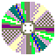

Устройство Персонального Компьютера
Персональный компьютер - это...
...многофункциональное электронное устройство, предназначенное для выполнения широкого спектра задач и операций. Он стал неотъемлемой частью современной жизни, использующимся в различных сферах деятельности, от работы до развлечений.
С развитием технологий ПК становятся всё более мощными и компактными, что позволяет использовать их как в домашних условиях, так и на профессиональном уровне. Благодаря Интернету у пользователей есть доступ к бесконечному количеству информации и ресурсов.
Основные комплектующие
Процессор
Процессор — основное устройство компьютера, осуществляющее программируемую обработку данных и координацию работы его устройств.
Основные функции процессора: выполнение инструкций, предоставленных программами; управление памятью (обращение к оперативной и кэш-памяти); обработка данных (арифметические и логические операции); управление системой (взаимодействие и координация работы остальных компонентов компьютера).
Материнская
плата
Материнская плата — это сложная многослойная печатная плата, на которой устанавливаются основные компоненты персонального компьютера либо сервера начального уровня.
Она соединяет в себе все важные компоненты системного блока — процессор, оперативную память, видеокарту и другие. Обеспечивает передачу сигналов и электрического питания. Основные функции материнской платы: обеспечивает связь всех элементов ПК для их нормального функционирования; питает все компоненты.
Оперативная
память
Оперативная память, или ОЗУ (оперативное запоминающее устройство), — это тип памяти, в котором во время работы компьютера хранится выполняемый машинный код и данные, которые в этот момент обрабатывает процессор.
Особенности оперативной памяти: Временное хранение. Данные хранятся только на время выполнения определённых операций. При выключении компьютера или перезагрузке информация из оперативной памяти удаляется. Энергозависимость. Если прекратить подачу электропитания, вся хранящаяся в оперативной памяти информация стирается.
Графическая
карта
Графическая карта (видеокарта) — электронная плата или специализированная микросхема, предназначенная для обработки видеоданных и управления работой дисплея (компьютера, смартфона и др.)
Некоторые функции видеокарты: ускорение 2D- и 3D-рендеринга; декодирование видео; управление множеством пикселей на экране; реализация вычислительных задач, связанных с графикой.
Запоминающее
устройство
Жёсткий диск — это электромеханическое устройство для хранения и обработки данных.
Жёсткий диск выполняет несколько ключевых функций: Хранение данных. На жёстком диске долговременным образом сохраняются операционная система, приложения, документы, фотографии, видео, музыка и другие файлы. В отличие от оперативной памяти, данные на жёстком диске сохраняются даже после выключения компьютера.